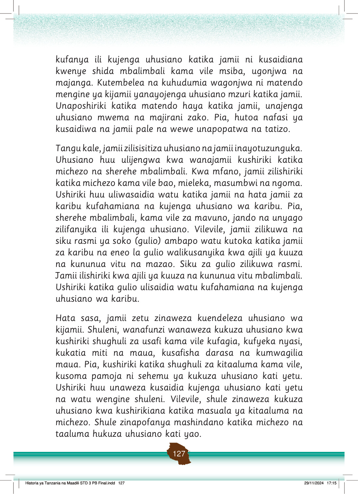

kufanya ili kujenga uhusiano katika jamii ni kusaidiana kwenye shida mbalimbali kama vile msiba, ugonjwa na majanga.
Kutembelea na kuhudumia wagonjwa ni matendo mengine ya kijamii yanayojenga uhusiano mzuri katika jamii.
Unaposhiriki katika matendo haya katika jamii, unajenga uhusiano mwema na majirani zako.
Pia, hutoa nafasi ya kusaidiwa na jamii pale na wewe unapopatwa na tatizo.
Tangu kale, jamii zilisisitiza uhusiano na jamii inayotuzunguka.
Uhusiano huu ulijengwa kwa wanajamii kushiriki katika michezo na sherehe mbalimbali.
Kwa mfano, jamii zilishiriki katika michezo kama vile bao, mieleka, masumbwi na ngoma.
Ushiriki huu uliwasaidia watu katika jamii na hata jamii za karibu kufahamiana na kujenga uhusiano wa karibu.
Pia, sherehe mbalimbali, kama vile za mavuno, jando na unyago zilifanyika ili kujenga uhusiano.
Vilevile, jamii zilikuwa na siku rasmi ya soko (gulio) ambapo watu kutoka katika jamii za karibu na eneo la gulio walikusanyika kwa ajili ya kuuza na kununua vitu na mazao.
Siku za gulio zilikuwa rasmi.
Jamii ilishiriki kwa ajili ya kuuza na kununua vitu mbalimbali.
Ushiriki katika gulio ulisaidia watu kufahamiana na kujenga uhusiano wa karibu.
Hata sasa, jamii zetu zinaweza kuendeleza uhusiano wa kijamii.
Shuleni, wanafunzi wanaweza kukuza uhusiano kwa kushiriki shughuli za usafi kama vile kufagia, kufyeka nyasi, kukatia miti na maua, kusafisha darasa na kumwagilia maua.
Pia, kushiriki katika shughuli za kitaaluma kama vile, kusoma pamoja ni sehemu ya kukuza uhusiano kati yetu.
Ushiriki huu unaweza kusaidia kujenga uhusiano kati yetu na watu wengine shuleni.
Vilevile, shule zinaweza kukuza uhusiano kwa kushirikiana katika masuala ya kitaaluma na michezo.
Shule zinapofanya mashindano katika michezo na taaluma hukuza uhusiano kati yao.
Historia ya Tanzania na Maadili STD 3 PB Final.indd 127
29/11/2024 17:15